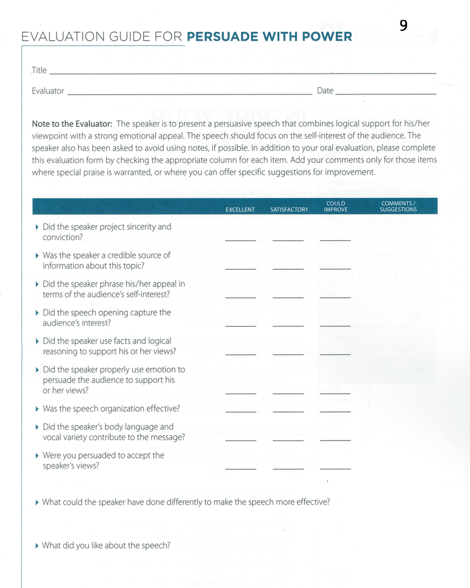

<!-- Main -->
	<div id="main" class="wrapper style1">
		<div class="container">
			<section>
				<div class="10u -1u">
					<header class="major">
						<!-- <h2>Blog</h2> -->
						<!-- <span class="byline">Integer sit amet pede vel arcu aliquet pretium</span> -->
					</header>
					<h2>What is this speech about ?</h2>
					<ul>

						<li>The ability to persuade people – getting them to understand, accept and act upon your ideas – is a valuable skill.</li>
						<li>Your listeners will more likely be persuaded if they perceive you as credible, if you use logic and emotion in your appeal, if you carefully structure your speech and if you appeal to their interests.</li>
						<li>Avoid using notes because they may cause listeners to doubt your sincerity, knowledge and conviction.</li>
</ul><br>
<h2>Objectives</h2>
<ul>

<li>Persuade listeners to adopt your viewpoint or ideas or to take some action.</li>
	 <li>Appeal to the audience’s interests.</li>
	 <li>Use logic and emotion to support your position.</li>
	 <li>Avoid using notes.</li>
	 <li>Time: Five to seven minutes.</li>
</ul><br>
<h2>Evaluation</h2>
Download: <a href="Evaluation9.pdf"></a>
	<br>

	<h2>More Resources</h2>
<li><a href="Persuade_with_power.pdf">Resource from Toastmasters</a></li>
		<li><a href="http://sixminutes.dlugan.com/4-ways-persuasive/">4 Ways to Persuade</a></li>
		<li>  <a href="http://sixminutes.dlugan.com/logos-examples-speaking/">17 Minutes to Be a More Persuasive Speeches</a></li>
		<li><a href="http://sixminutes.dlugan.com/speech-preparation-6-rhetorical-devices/">Add rhetorical devices to your speech</a></li>


				</div>
			</section>
		</div>
	</div>
